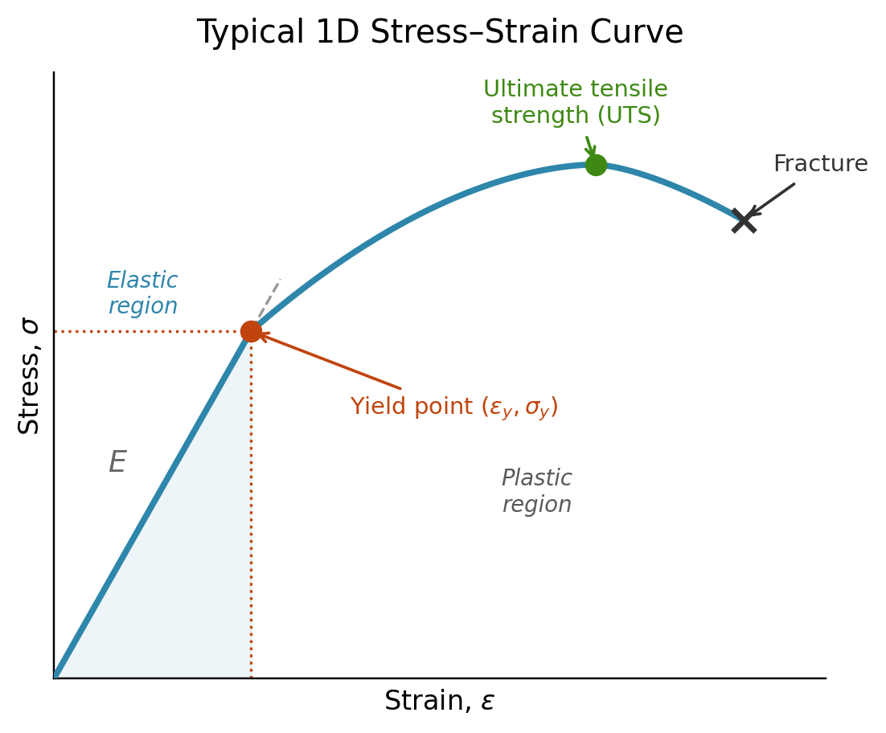

Yield Criteria: Von Mises vs Tresca
Equivalent stress measures.
In 1d a typical stress-strain figure looks like the following:

This is what experimentalists get when doing a tensile test. After a certain stress \(\sigma_Y\), the behavior of the material is no longer purely elastic and the stress is no longer linearly dependent on the strain. The issue is that in a real material, we do not have uniaxial displacements and stresses, so the stress is a \(3 \times 3\) tensor, but at which stress does it yield? This is where equivalent stress come into play, we use a scalar \(\sigma_{eq} = f(\boldsymbol{\sigma})\) and compare it to the yield stress \(\sigma_Y\) to determine if plastic deformation happen. There are a variety of equivalent stress measures that we can choose, but in this course we consider the Von-Mises and Tresca equivalent stress.
The Von-Mises equivalent stress measures (1.35 in the lecture notes):
\[ \sigma_{eM}(\sigma_{ij}) = \sqrt{\frac{3}{2}\sigma_{ij}^\text{dev}\sigma_{ij}^\text{dev}} \]
One thing that should be noted is that this is a scalar value, and it is an invariant of the stress tensor, meaning that the Von-Mises stress is independent on the basis in which we express the components of the stress tensors. We will see in exercise 5 that the Von-Mises stress can be written in term of principal stress:
\[ \sigma_{vM} = \sqrt{\frac{1}{2}\left[(\sigma_1-\sigma_2)^2 + (\sigma_2-\sigma_3)^2 + (\sigma_3-\sigma_1)^2\right]} \]
We also defined the Tresca criterion. \[ \sigma_{\text{Tresca}} = \max\big(|\sigma_1-\sigma_2|,\ |\sigma_2-\sigma_3|,\ |\sigma_3-\sigma_1|\big) = \sigma_{max} - \sigma_{min} \]
Setup. Order the principal stresses \(\sigma_1 \ge \sigma_2 \ge \sigma_3\). Define
\[ \sigma_T = \sigma_1 - \sigma_3 \qquad \text{(Tresca equivalent stress)} \]
Claim. \(\sigma_{vM} \le \sigma_T\), with equality if and only if \(\sigma_2 = \sigma_1\) or \(\sigma_2 = \sigma_3\).
Proof. Let \(a = \sigma_1 - \sigma_2 \ge 0\) and \(b = \sigma_2 - \sigma_3 \ge 0\) (both non-negative by the ordering). Then
\[ \sigma_1 - \sigma_3 = a + b, \qquad \sigma_T = a+b. \]
Substituting into the von Mises expression:
\[ \sigma_{vM}^2 = \tfrac{1}{2}\left[a^2 + b^2 + (a+b)^2\right] = \tfrac{1}{2}\left[2a^2+2b^2+2ab\right] = a^2+ab+b^2. \]
Meanwhile
\[ \sigma_T^2 = (a+b)^2 = a^2+2ab+b^2. \]
Subtracting,
\[ \sigma_T^2 - \sigma_{vM}^2 = ab \ge 0, \]
since \(a,b \ge 0\). Because both \(\sigma_T\) and \(\sigma_{vM}\) are non-negative, this gives
\[ \sigma_{vM} \le \sigma_T. \]
Equality holds iff \(ab = 0\), i.e. iff \(a=0\) (\(\sigma_1=\sigma_2\)) or \(b=0\) (\(\sigma_2=\sigma_3\)). \(\blacksquare\)
In the following cell, you can play around the two criterion and see when they differ.